전기기능사 (2011-07-31 기출문제)
1과목: 전기 이론
1. 저항 R=15[Ω], 자체 인덕턴스 L=35[mH], 정전용량 C=300[㎌]의 직렬회로에서 공진 주파수 f 는 약 얼마[Hz] 인가?
- 40
- 50
- 60
- 70
(정답률: 48%)

2. 그림과 같은 회로에서 4Ω에 흐르는 전류[A] 값은?
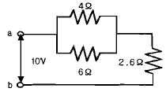
- 0.6
- 0.8
- 1.0
- 1.2
(정답률: 50%)
3. "같은 전기량에 의해서 여러 가지 화합물이 전해될 때 석출되는 물질의 양은 그 물질의 화학당량에 비례한다." 이 법칙은?
- 렌츠의 법칙
- 패러데이의 법칙
- 앙페르의 법칙
- 줄의 법칙
(정답률: 80%)
4. 용량을 변화시킬 수 있는 콘덴서는?
- 바리콘
- 마일러 콘덴서
- 전해 콘덴서
- 세라믹 콘덴서
(정답률: 72%)
5. 상호 유도 회로에서 결합계수 k는?(단, M은 상호 인덕턴스, L1, L2는 자기 인덕턴스이다.)
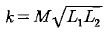
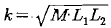
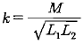
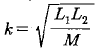
(정답률: 58%)
6. 일반적으로 교류전압계의 지시값은?
- 최대값
- 순시값
- 평균값
- 실효값
(정답률: 64%)
7. +Q1[C]과 -Q2[C]의 전하가 진공 중에서 r[m]의 거리에 있을 때 이들 둘 사이에 작용하는 정전기력 F[N]는?
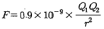
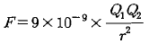
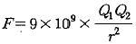
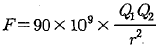
(정답률: 79%)
8. 교류회로에서 코일과 콘덴서를 병렬로 연결한 상태에서 주파수가 증가하면 어느 쪽이 전류가 잘 흐르는가?
- 코일
- 콘덴서
- 코일과 콘덴서에 같이 흐른다.
- 모두 흐르지 않는다.
(정답률: 60%)
9. 어떤 회로에 50[V]의 전압을 가하니 8+j6[A]의 전류가 흘렀다면 이 회로의 임피던스[Ω]는?
- 3-j4
- 3+j4
- 4-j3
- 4+j3
(정답률: 51%)
10. 전하의 성질에 대한 설명 중 옳지 않는 것은?
- 같은 종류의 전하는 흡인하고 다른 종류의 전하기기를 반발한다.
- 대전체에 들어 있는 전하를 없애려면 접지시킨다.
- 대전체의 영향으로 비대전체에 전기가 유도 된다.
- 전하의 가장 안정한 상태를 유지하려는 성질이 있다.
(정답률: 77%)
11. 다음 중 저항의 온도계수가, 부(-)의 특성을 가지는 것은?
- 경동선
- 백금선
- 텅스텐
- 서미스터
(정답률: 61%)
12. 금속 내부를 지나는 자속의 변화로 금속 내부에 생기는 맴돌이 전류를 작게 하려면 어떻게 하여야 하는가?
- 두꺼운 철판을 사용한다.
- 높은 전류를 가한다.
- 얇은 철판을 성층하여 사용한다.
- 철판 양면에 절연지를 부착한다.
(정답률: 76%)
13. 반지름 5㎝, 권수 100회인 원형 코일에 15A의 전류가 흐르면 코일중심의 자장의 세기는 몇 [AT/m] 인가?
- 750
- 3000
- 15000
- 22500
(정답률: 60%)
14. 0.2[H]인 자기 인덕턴스에 5[A]의 전류가 흐를 때 축적 되는 에너지[J]는?
- 0.2
- 2.5
- 5
- 10
(정답률: 64%)
15. 1대의 출력이 100[kVA]인 단상 변압기 2대로 V결선하여 3상 전력를 공급할 수 있는 최대전력은 몇 [kVA] 인가?
- 100
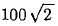
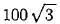
- 200
(정답률: 71%)
16. 비정현파가 발생하는 원인과 거리가 먼것은?
- 자기포화
- 옴의법칙
- 히스테리시스
- 전기자반작용
(정답률: 66%)
17. 누설자속이 발생되는 어려운 경우는 어느 것인가?
- 자로에 공극이 있는 경우
- 자로의 자속 밀도가 높은 경우
- 철심이 자기 포화되어 있는 경우
- 자기회로의 자기저항이 작은 경우
(정답률: 44%)
18. 다음은 전기력선의 성질이다. 틀린 것은?
- 전기력선은 서로 교차하지 않는다.
- 전기력선은 도체의 표면에 수직이다.
- 전기력선의 밀도는 전기장의 크기를 나타낸다.
- 같은 전기력선은 서로 끌어당긴다.
(정답률: 80%)
19. 평형 3상 회로에서 1상의 소비전력이 P라면 3상 회로의 전체 소비전력은?
- P
- 2P
- 3P
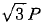
(정답률: 68%)
20. 접지저항이나 전해액저항 측정에 쓰이는 것은?
- 휘스톤 브리지
- 전위차계
- 콜라우시 브리지
- 메거
(정답률: 53%)
2과목: 전기 기기
21. 전동기의 회전 방향을 바꾸는 역회전의 원리를 이용한 제동 방법은?
- 역상제동
- 유도제동
- 발전제동
- 회생제동
(정답률: 81%)
22. 동기발전기의 무부하포화곡선을 나타낸 것이다. 포화계수에 해당하는 것은?
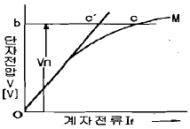
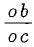
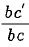
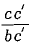
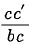
(정답률: 57%)
23. 부흐홀츠 계전기의 설치 위치로 가장 적당한 곳은?
- 변압기 주 탱크 내부
- 콘서베이터 내부
- 변압기 고압측 부싱
- 변압기 주 탱크와 콘서베이터 사이
(정답률: 83%)
24. 직류 분권발전기가 있다. 전기자 총도체수 220, 매극의 자속수 0.01[Wb], 극수 6, 회전수 1500[rpm] 일 때 유기기전력은 몇 [V]인가?(단, 전기자 권선은 파권이다.)
- 60
- 120
- 165
- 240
(정답률: 55%)
25. 다음 직류 전동기에 대한 설명으로 옳은 것은?
- 전기철도용 전동기는 차동 복권 전동기이다.
- 분권 전동기는 계자 저항기로 쉽게 회전속도를 조정할 수 있다.
- 직권 전동기에서는 부하가 줄면 속도가 감소한다.
- 분권 전동기는 부하에 따라 속도가 현저하게 변한다.
(정답률: 47%)
26. 다음 회로도에 대한 설명으로 옳지 않은 것은?
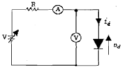
- 다이오드의 양극의 전압이 음극에 비하며 높을 때를 순방향 도통 상태라 한다.
- 다이오드의 양극의 전압이 음극에 비하여 낮을 때를 역방향 저지 상태라 한다.
- 실제의 다이오드는 순방향 도통 시 양 단자 간의 전압 강하가 발생하지 않는다.
- 역방향 저지 상태에서는 역방향으로(음극에서 양극으로) 약간의 전류가 흐르는데 이를 누설 전류라고 한다.
(정답률: 52%)
27. 3상 유도전동기의 토크는?
- 2차 유도기전력의 2승에 비례한다.
- 2차 유도기전력에 비례한다.
- 2차 유도기전력과 무관한다.
- 2차 유도기전력의 0.5승에 비례한다.
(정답률: 56%)
28. 전지 전극과 대지 사이의 저항은?
- 고유저항
- 대지전극저항
- 접지저항
- 접촉저항
(정답률: 59%)
29. 직류전동기의 속도특성 곡선을 나타낸 것이다. 직권 전동기의 속도 특성을 나타낸 것은?
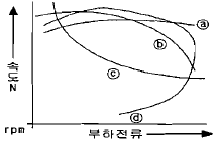
- ⓐ
- ⓑ
- ⓒ
- ⓓ
(정답률: 50%)
30. 낙뢰, 수목 접촉, 일시적인 섬락 등 순간적인 사고로 계통에서 분리된 구간을 신속하게 계통에 투입시킴으로써 계통의 안정도를 향상시키고 정전 시간을 단축시키기 위한 사용되는 계전기는?
- 차동 계전기
- 과전류 계전기
- 거리 계전기
- 재폐로 계전기
(정답률: 58%)
31. 보극이 없는 직류기의 운전 중 중성점의 위치가 변하지 않는 경우는?
- 무부하
- 전부하
- 중부하
- 과부하
(정답률: 79%)
32. 그림은 유동 전동기 속도제어 회로 및 트랜지스터의 컬렉터 전류 그래프이다. ⓐ와 ⓑ에 해당하는 트랜지스터는?
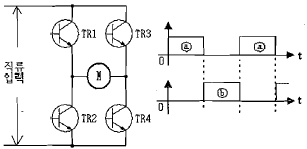
- ⓐ는 TR1과 TR2, ⓑTR3, TR4
- ⓐ는 TR1과 TR3, ⓑTR2, TR4
- ⓐ는 TR2과 TR4, ⓑTR1, TR3
- ⓐ는 TR1과 TR4, ⓑTR2, TR3
(정답률: 48%)
33. 다음 중 변압기에서 자속과 비례하는 것은?
- 권수
- 주파수
- 전압
- 전류
(정답률: 35%)
34. 비돌극형 동기발전기의 단자접압(1상)을 V, 유도 기전력(1상)을 E, 동기 리액턴스 Xs, 부하각을 δ라고 하면, 1상의 출력[W]은?(단, 전기자 저항 등은 무시한다.)
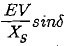
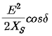
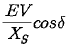
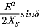
(정답률: 47%)
35. 3상 동기전동기 자기동법에 관한 사항 중 틀린 것은?
- 기동토크를 적당한 값으로 유지하기 위하여 변압기 탭에 의해 전격전압의 80% 정도로 저압을 가해 기동을 한다.
- 기동토크는 일반적으로 적고 전부하 토크의 40~60% 정도이다.
- 제동권선에 의한 기동토크를 이용하는 것으로 제동권선은 2차권선으로서 기동토크를 발생한다.
- 기동할 때에는 회전자속에 의하여 계자권선안에는 고압이 유도되어 절연을 파괴할 우려가 있다.
(정답률: 37%)
36. 유도 전동기 권선법 중 맞지 않는 것은?
- 고정자 권선은 단층 파권이다.
- 고정자 권선은 3상 권선이 쓰인다.
- 소형 전동기는 보통 4극이다.
- 홈 수는 24개 또는 36개이다.
(정답률: 40%)
37. 3상 동기기의 제동 권선의 역할은?
- 난조방지
- 효율증가
- 출력증가
- 역률개선
(정답률: 75%)
38. 60[Hz], 20000[kVA]의 발전기의 회전수가 900[rpm]이라면 이 발전기의 극수는 얼마인가?
- 8극
- 12극
- 14극
- 16극
(정답률: 67%)
39. 일반적으로 반도체의 저항값과 온도와의 관계가 바른것은?
- 저항값은 온도에 비례한다.
- 저항값은 온도에 반비례한다.
- 저항값은 온도의 제곱에 반비례한다.
- 저항값은 온도의 제곱에 비례한다.
(정답률: 42%)
40. 출력에 대한 전부하 동손이 2[%], 철손이 1[%]인 변압기의 전부하 효율[%]은?
- 95
- 96
- 97
- 98
(정답률: 73%)
3과목: 전기 설비
41. 정션 박스내에서 절연 전선을 쥐꼬리 접속한 후 접속과 절연을 위해 사용되는 재료는?
- 링형 슬리브
- S형 슬리브
- 와이어 커넥터
- 터미널 러그
(정답률: 71%)
42. 케이블 공사에 의한 저압 옥내배선에서 케이블을 조영재의 아랫면 또는 옆면에 따라 붙이는 경우에는 전선의 지지점간 거리는 몇 [m] 이하이어야 하는가?
- 0.5
- 1
- 1.5
- 2
(정답률: 54%)
43. 분전반 및 배전반은 어떤 장소에 설치하는 것이 바람직한가?
- 전기회로를 쉽게 조작할 수 있는 장소
- 개폐기를 쉽게 개폐할 수 없는 장소
- 은폐된 장소
- 이동이 심한 장소
(정답률: 77%)
44. 합성수지 몰드 공사는 사용전압이 몇 [V] 미만의 배선을 사용하는가?
- 200[V]
- 400[V]
- 600[V]
- 800[V]
(정답률: 78%)
45. 천장에 작은 구멍을 뚫어 그 속에 등기구를 매입시키는 방식으로 건축의 공간을 유효하게 하는 조명방식은?
- 코브방식
- 코퍼방식
- 밸런스방식
- 다운라이트방식
(정답률: 61%)
46. 동전선의 접속방법에서 종단접속 방법이 아닌 것은?
- 비틀어 꽂는 형의 전선접속기에 의한 접속
- 종단겹침용 슬리브(E형)에 의한 접속
- 직선 맞대기용 슬리브(B)형에 의한 압착접속
- 직선 겹침용 슬리브(P형)에 의한 접속
(정답률: 51%)
47. 가연성 가스가 존재하는 저압 옥내전기설비 공사 방법으로 옳은 것은?
- 가요 전선관 공사
- 합성 수지관 공사
- 금속관 공사
- 금속 몰드 공사
(정답률: 67%)
48. 셀룰로이드, 성냥, 석유류 등 기타 가연성 위험물질을 제조 또는 저장하는 장소의 배선 방법이 아닌 것은?
- 배선을 금속관배선, 합성수지관배선 또는 케이블배선에 의할 것
- 금속관은 박강 전선관 또는 이와 동등이상의 강도가 있는 것을 사용할 것
- 두께가 2[㎜] 미만의 합성수지제 전선관을 사용할 것
- 합성수지관배선에 사용하는 합성수지관 및 박스 기타 부속품은 손상될 우려가 없도록 시설할 것
(정답률: 70%)
49. 라이팅 덕트 공사에 의한 저압 옥내배선 시 덕트의 지지점간의 거리는 몇 [m]이하로 해야 하는가?
- 1.0
- 1.2
- 2.0
- 3.0
(정답률: 56%)
50. 소맥분, 전분 기타 가연성의 분진이 존재하는 곳의 저압 옥내 배선공사 방법에 해당되지 않는 것은?
- 케이블 공사
- 금속관 공사
- 애자사용 공사
- 합성수지관 공사
(정답률: 75%)
51. 지중 전선로를 직접 매설식에 의하여 시설하는 경우 차량의 압력을 받을 우려가 있는 장소의 매설 깊이는?(관련 규정 개정전 문제로 여기서는 기존 정답인 4번을 누르면 정답 처리됩니다. 자세한 내용은 해설을 참고하세요.)
- 0.6[m] 이상
- 0.8[m] 이상
- 1.0[m] 이상
- 1.2[m] 이상
(정답률: 78%)
52. 접지를 하는 목적이 아닌 것은?
- 이상 전압의 발생
- 전로의 대지전압의 저하
- 보호 계전기의 동작 확보
- 감전의 방지
(정답률: 92%)
53. 가요 전선관 공사에 다음의 전선을 사용 하였다. 맞게 사용 한 것은?
- 알루미늄 35[mm2]의 단선
- 절연전선 16[mm2]의 단선
- 절연전선 10[mm2]의 연선
- 알루미늄 25[mm2]의 단선
(정답률: 43%)
54. 철근 콘크리드 건물에 노출 금속관 공사를 할 때 직각으로 굽히는 곳에 사용되는 금속관 재료는?
- 엔트런스 캡
- 유니버셜엘보
- 4각 박스
- 터미널 캡
(정답률: 69%)
55. 전주의 길이가 16[m]인 지지물을 건주하는 경우에 땅에 묻히는 최소 깊이는 몇[m] 인가?(단. 설계하중이 6.8kN 이하 이다.)
- 1.5
- 2
- 2.5
- 3
(정답률: 67%)
56. 하나의 수용장소의 인입선 접속점에서 분기하여 지지물을 거치지 아니하고 다른 수용장소의 인입선 접속점에 이르는 전선은?
- 가공 인입선
- 구내 인입선
- 연접 인입선
- 옥측배선
(정답률: 67%)
57. 가공전선로의 지선에 사용되는 애자는?
- 노브 애자
- 인류 애자
- 현수 애자
- 구형 애자
(정답률: 60%)
58. 전기공사에서 접지저항을 측정할 때 사용하는 측정기는 무엇인가?
- 검류기
- 변류기
- 메거
- 어스테스터
(정답률: 55%)
59. 다음 중 3로 스위치를 나타내는 그림 기호는?
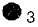
(정답률: 82%)
60. 최대 사용전압이 70[kV]인 중성점 직접접지식 전로의 절연내력 시험전압은 몇 [V]인가?
- 35000[V]
- 42000[V]
- 44800[V]
- 50400[V]
(정답률: 44%)
f = 1 / (2π√(LC))
여기서 L은 인덕턴스, C는 정전용량입니다. 따라서,
f = 1 / (2π√(35×10^-3×300×10^-6)) ≈ 50 [Hz]
따라서 정답은 "50"입니다. 이유는 공식에 따라 계산한 결과이기 때문입니다.